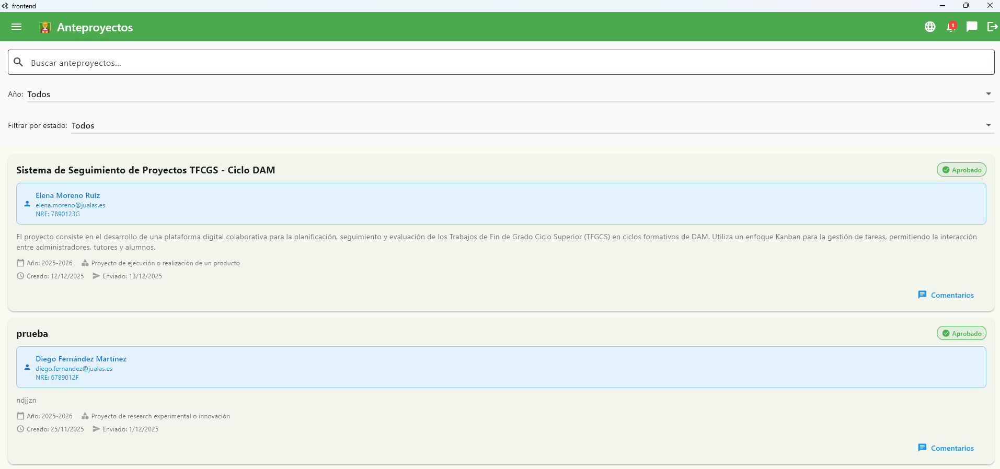

La Solución: Plataforma Centralizada
Ciclo de Vida Digital
Digitalización completa del proceso, desde la propuesta del anteproyecto hasta su validación final.
Gestión por Roles
Interfaces específicas para Estudiantes, Tutores y Administradores con permisos adaptados.
Colaboración Real
Comunicación fluida y seguimiento en tiempo real del estado de los proyectos.

Formulario de creación de anteproyecto (vista estudiante)

Lista de anteproyectos por revisar (vista tutor)
03